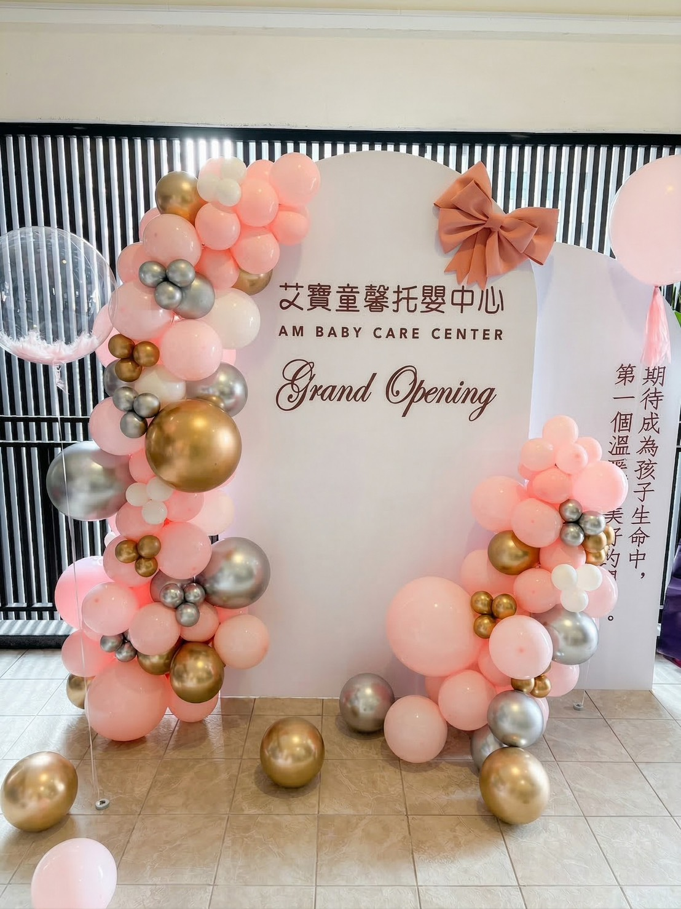
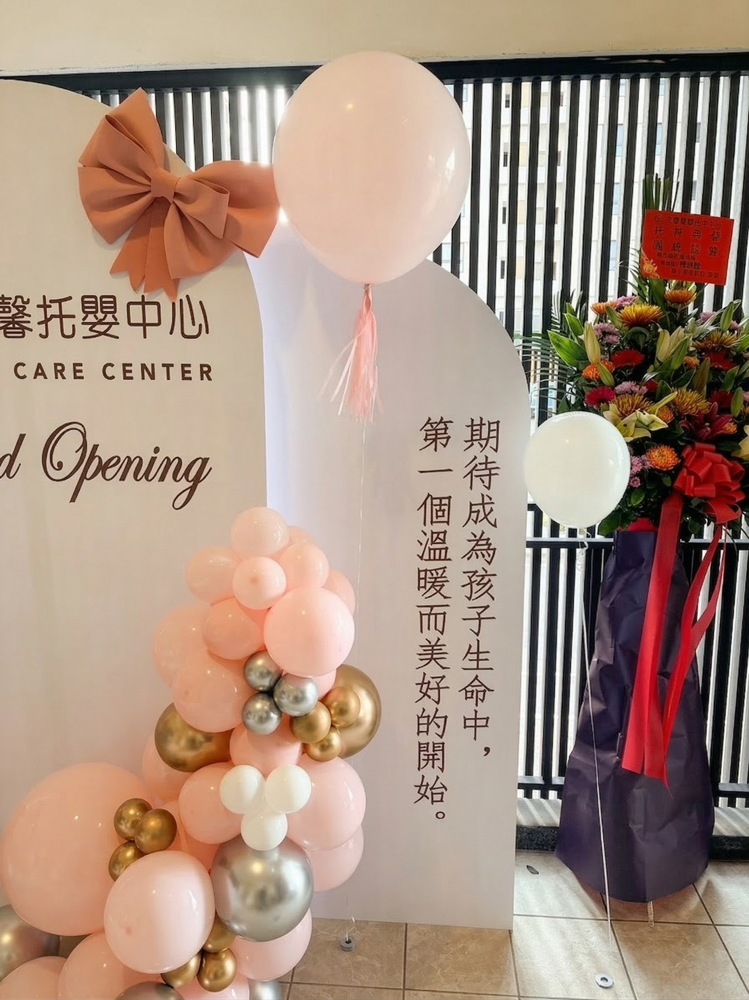
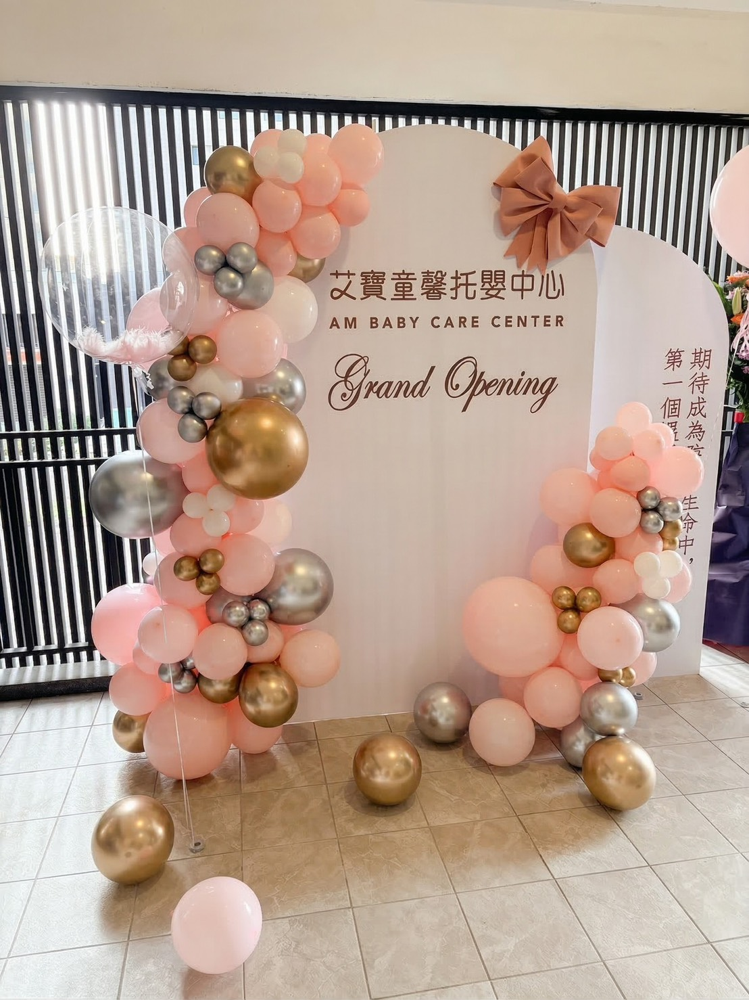
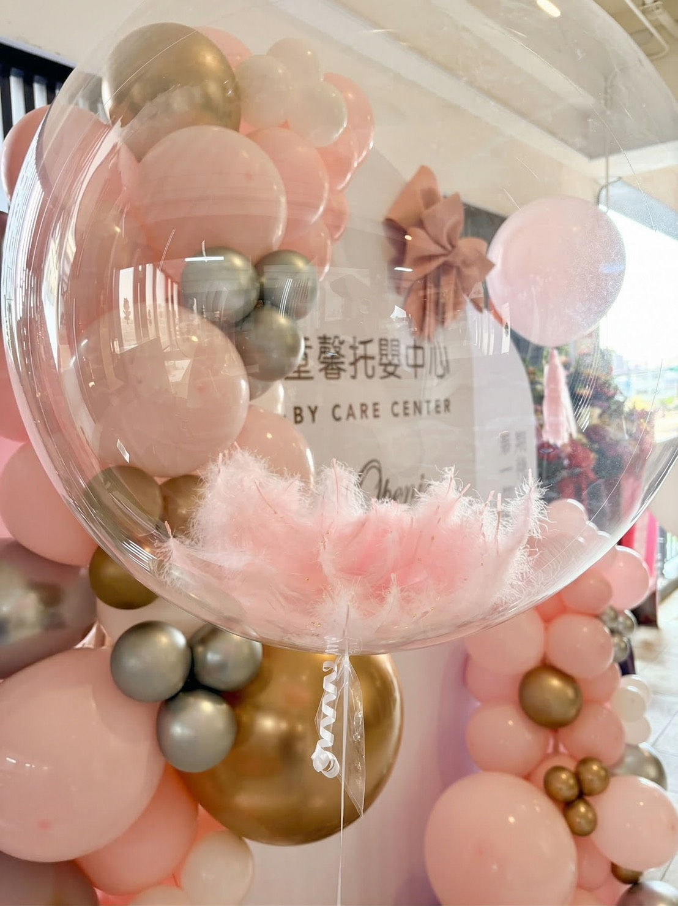
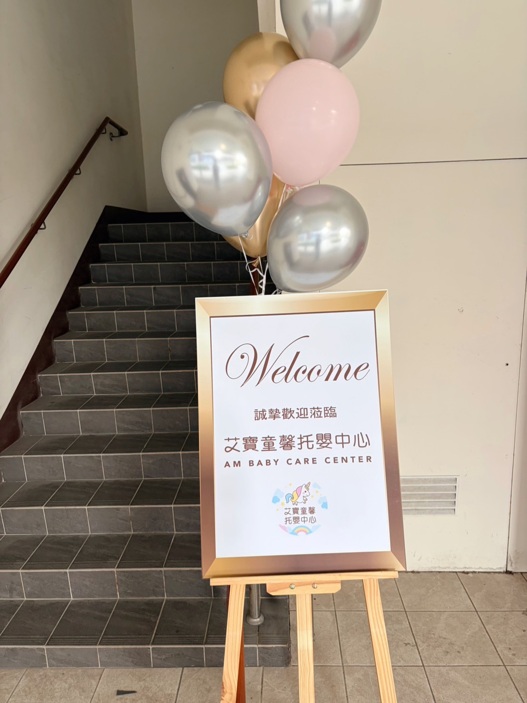

艾寶童馨托嬰中心開幕佈置｜新竹湖口托嬰中心開幕案例分享
氣球大叔 Sony 為艾寶童馨托嬰中心打造馬卡粉、鉻金、鉻銀主題的溫柔開幕迎賓空間
📍 地點：新竹縣湖口鄉中山路一段577號2樓之1
2026 年 3 月 14 日，氣球大叔 Sony 來到新竹湖口，為艾寶童馨托嬰中心完成一場溫柔、明亮又富有品牌感的開幕佈置。此次開幕案例以馬卡粉、鉻金、鉻銀為主色，結合弧形背板、透明波波球與入口迎賓設計，打造出兼具安心感、儀式感與拍照效果的托嬰中心開幕畫面。

對托嬰中心而言，開幕不只是活動當天的呈現，更是品牌與家長第一次正式見面的重要時刻。空間給人的第一印象，往往會直接影響家長對環境、服務與品牌質感的感受。因此這次的規劃，不只是單純把現場布置得漂亮，而是希望透過整體視覺語言，讓來到現場的人感受到溫暖、安心與被細心照顧的氛圍。
本次開幕佈置主題：馬卡粉 × 鉻金 × 鉻銀
這次色彩設定以馬卡粉帶出溫和親近感；鉻金增加開幕精緻度；鉻銀則提升畫面的明亮度。這樣的色彩組合，既能保有托嬰中心需要的柔和感，也能在開幕現場呈現出明亮、耐看又有記憶點的畫面。對於新竹、湖口地區的親子空間佈置來說，是極具質感的首選。

主視覺背板與拍照區規劃
主視覺以白色弧形背板為核心，能完整襯托 馬卡粉、鉻金、鉻銀 的層次。我們運用不同尺寸的氣球堆疊出自然流動感，搭配地面散落的氣球營造景深。這樣的設計不只適合開幕合影，也很適合作為品牌形象紀錄與社群發布內容。

細節美學：透明波波球與入口迎賓
透明波波球加入粉色羽毛，增添了細膩的視覺溫暖；而從賓客進場的那刻起，入口處的迎賓牌與漂浮氣球就建立起一致的視覺語言，讓動線從入口一路延伸到主背板區，維持一致的品牌語言。


💡 設計理念
我們希望透過這次佈置，讓家長一進門就感受到放鬆、安心與溫暖，也讓開幕當天留下自然好看的品牌畫面。💡 關於新竹湖口開幕佈置的常見問題
- Q: 托嬰中心開幕佈置適合什麼顏色？
- A: 托嬰中心通常適合柔和、乾淨、溫暖的色彩搭配，例如馬卡粉、米白、大地色，或搭配少量鉻金、鉻銀作為點綴。這類配色能同時呈現親和力與質感，也更符合家長對嬰幼空間的期待。
- Q: 開幕氣球佈置通常可以維持多久？
- A: 在室內空調穩定、避免日曬的情況下，通常能維持數天良好的觀賞狀態；實際時間仍會依場地環境與材質配置而有所不同。
- Q: 新竹湖口地區可以客製托嬰中心開幕佈置嗎？
- A: 可以。我們可依照品牌名稱、場地尺寸、預算與活動需求，規劃背板、迎賓牌、拍照區與整體氣球色系，讓托嬰中心開幕更完整，也更有品牌辨識度。
🎈 正在尋找新竹湖口開幕佈置嗎？
如果您正在規劃 托嬰中心開幕佈置、幼兒園迎賓背板、親子空間拍照區設計，或希望為品牌活動打造更完整的現場視覺，氣球大叔 Sony 可依照場地條件、品牌風格與預算需求，提供客製化佈置提案與現場執行服務：
- 托嬰中心／幼兒園開幕佈置：符合品牌色系的溫馨拍照牆。
- 親子空間迎賓背板與拍照區設計：打造具備專業拍照效果的導引與裝飾。
- 品牌活動視覺規劃：提升整體活動質感與紀錄畫面完整度。
歡迎提前與我們討論場地尺寸、活動日期與預算需求，我們會依照品牌調性提供合適的佈置方向。
📅 本文紀錄於 2026-03-14，由氣球大叔 Sony 分享新竹湖口托嬰中心開幕案例。